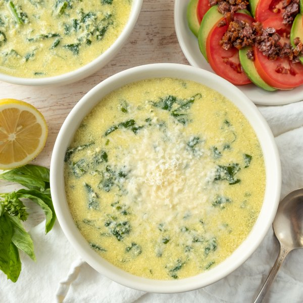

Roman Egg Drop Soup (Stracciatella) with Olive, Tomato & Avocado Salad

Total Time
35 min
Nutrition (per serving)
579.3 kcalCalories
36.9 gProtein
26.8 gCarbs
39.6 gFat
Full nutrition table
| Calories | 579.3 kcal |
| Total fat | 39.6 g |
| Saturated fat | 11 g |
| Trans fat | 0.3 g |
| Cholesterol | 346.6 mg |
| Sodium | 505.5 mg |
| Carbohydrates | 26.8 g |
| Fiber | 10.4 g |
| Sugars | 6.6 g |
| Protein | 36.9 g |
| Potassium | 1785.3 mg |
| Calcium | 182.5 mg |
| Iron | 6.1 mg |
| Vitamin A | 1877.6 IU |
| Vitamin C | 58.9 mg |
| Vitamin D | 77.6 IU |
Cookware
Ingredients
- 2avocados
- 2 (5 oz) pkgsbaby spinach
- 64 fl ozchicken or vegetable broth
- 8eggs
- 1 small pkgfresh basil
- ¼ cupKalamata olives, pitted
- 1lemon
- 4 ozParmesan cheese
- 8sun-dried tomatoes, oil-packed
- 4tomatoes
- black pepper
- extra virgin olive oil
- nutmeg, ground
- red wine vinegar
- salt
Steps
- Wash and dry the fresh produce. (Skip the spinach if it came pre-washed.)1 small pkg fresh basil
1 lemon
2 (5 oz) pkgs baby spinach
2 avocados
4 tomatoes - Mince olives and sun-dried tomatoes; transfer both to a small bowl along with oil, vinegar, salt, and pepper. Stir to combine the tapenade and set aside.¼ cup Kalamata olives, pitted
8 sun-dried tomatoes, oil-packed
2 tsp extra virgin olive oil
1 tsp red wine vinegar
⅛ tsp salt
⅛ tsp black pepper - Pour broth into a large pot, add spices, and bring to a boil over medium heat. Once boiling, reduce to a simmer.64 fl oz (8 cups) chicken or vegetable broth
1 tsp salt
½ tsp black pepper
¼ tsp nutmeg, ground - Meanwhile, pick basil leaves off the stems, roll up crosswise, and thinly slice into ribbons; transfer to a medium bowl.
- Finely grate Parmesan; add to the bowl with the basil (setting a small handful aside for garnish).4 oz Parmesan cheese
- Juice lemon into the bowl.
- Add eggs to the bowl and whisk until well blended; set aside.8 eggs
- Roughly chop spinach.
- Add spinach to the simmering broth in handfuls, waiting for the spinach to wilt slightly before adding the next handful.
- Slowly pour the egg mixture into the soup, while gently stirring, to separate into ribbons. Simmer until the egg is cooked through, 2-3 minutes; cover and remove from heat.
- Meanwhile, halve and pit the avocados. Slice thinly while still in skin and scoop out with a spoon. Thinly slice tomatoes.
- Arrange avocado and tomato slices on plates and spoon tapenade over top.
- Divide soup between bowls and top with reserved Parmesan. Serve with salad on the side and enjoy!